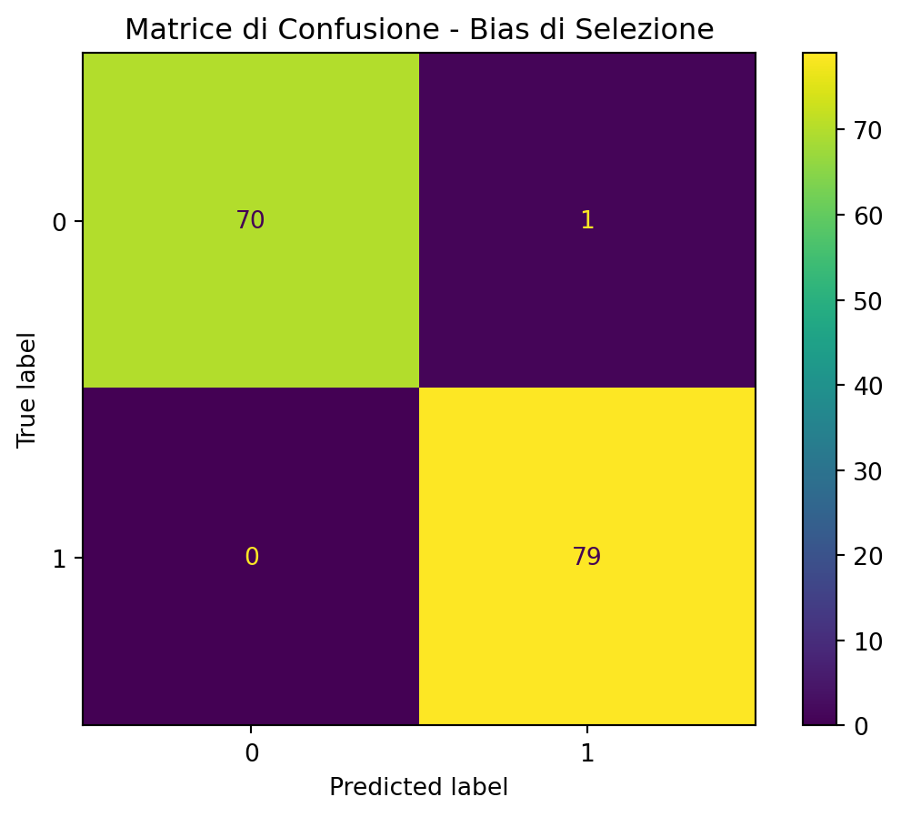
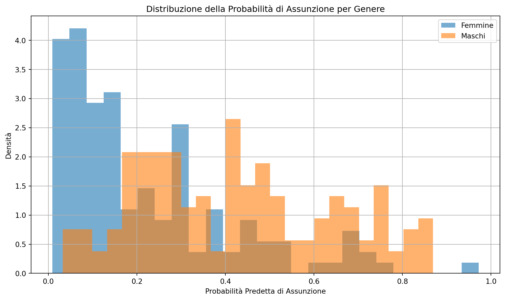
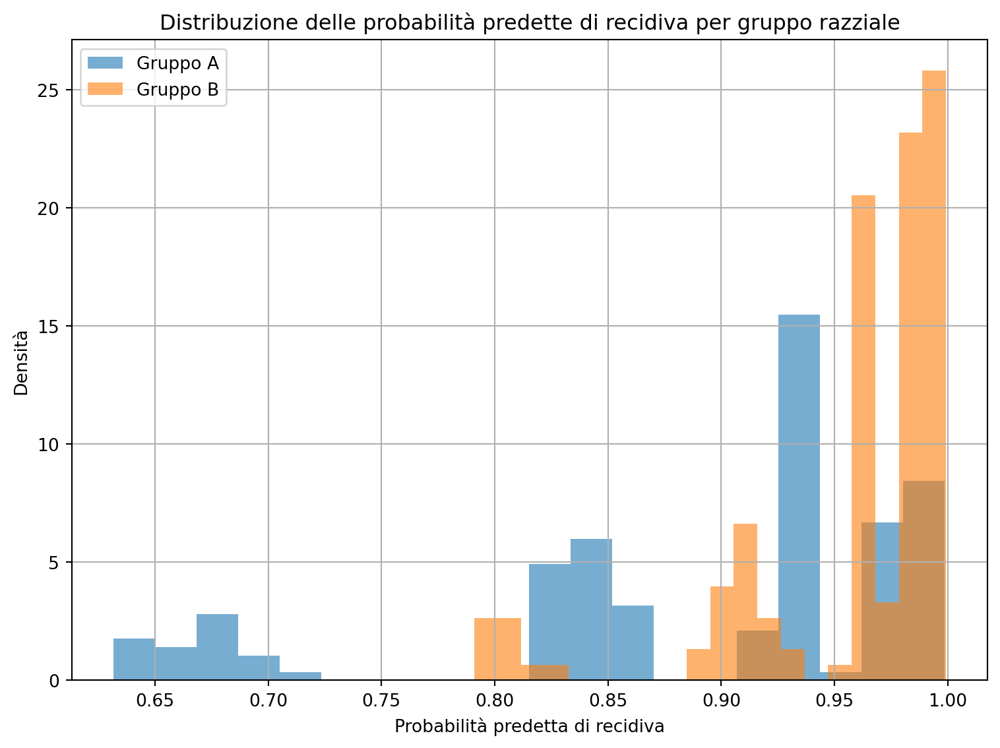

Il bias nei modelli di machine learning è una questione critica, soprattutto in settori sensibili come il diritto, dove le decisioni automatizzate possono avere implicazioni significative su persone fisiche, sulle persone giuridiche e sulla società in generale. Il bias può portare a previsioni errate e ingiuste, perpetuando disuguaglianze sociali e legali. Quindi, la comprensione e la gestione del bias sono essenziali per garantire la trasparenza e la giustizia nei sistemi legali e sociali.
In questa sezione, esploreremo in dettaglio le diverse tipologie di bias, le cause e gli impatti che esse possono avere, e le tecniche per mitigare questi bias, con esempi pratici che illustrano il problema.
11.2 Tipologie di Bias
I modelli di machine learning possono essere affetti da vari tipi di bias, ciascuno con caratteristiche specifiche e potenziali impatti:
Bias di Selezione: Si verifica quando il dataset utilizzato per addestrare il modello non rappresenta adeguatamente la popolazione o il fenomeno che si intende modellare. Ad esempio, immaginate un modello di machine learning sviluppato per predire il successo di un’azione legale basato su dati storici. Se il dataset include solo casi di successo e non quelli falliti, il modello potrebbe sovrastimare le probabilità di successo.
Bias di Conferma: Questo tipo di bias emerge quando i dati o le caratteristiche selezionate per il modello confermano preconcetti o ipotesi preesistenti. Ad esempio, un modello per la concessione del credito che utilizza dati storici potrebbe favorire inconsciamente gli individui di una determinata etnia o genere.
Bias di Sopravvivenza: Si verifica quando l’analisi si basa solo sui dati relativi ai “sopravvissuti” a un determinato processo, ignorando i casi che non ce l’hanno fatta. Ad esempio, se un’analisi per determinare i fattori di successo per avviare uno studio legale si basa solo su studi legali che sono riusciti, si ignoreranno i casi di studi legali che hanno fallito.
Bias Sistemico: Riflette le disuguaglianze o le discriminazioni già presenti nei dati storici e nei sistemi sociali. Ad esempio, un modello che predice la recidiva basato su dati storici che riflettono pratiche discriminatorie della polizia potrebbe perpetuare tali discriminazioni.
Bias Algoritmico: Questo tipo di bias è introdotto dall’algoritmo stesso, spesso a causa di obiettivi di ottimizzazione che non rappresentano adeguatamente il problema. Ad esempio, un algoritmo di scoring creditizio ottimizzato esclusivamente per ridurre i tassi di insolvenza potrebbe penalizzare ingiustamente gruppi demografici con meno accesso al credito.
11.3 Cause e Impatti del Bias
11.3.1 Cause del Bias
Dataset Non Rappresentativi: Uno dei motivi principali del bias è l’uso di dataset non rappresentativi della popolazione target. Ad esempio, se un modello di predizione della recidiva è addestrato principalmente su dati relativi a reati minori, potrebbe non essere accurato quando applicato a reati più gravi.
Scelte di Modellazione: Le decisioni prese durante la fase di modellazione, come la selezione delle caratteristiche o la scelta dell’algoritmo, possono introdurre bias. Per esempio, includere variabili come il “quartiere di residenza” in un modello potrebbe introdurre bias socio-economici.
Feedback Loop: Un feedback loop si verifica quando le previsioni di un modello influenzano i dati futuri, rafforzando il bias. Ad esempio, un sistema di polizia predittiva che invia più pattuglie in quartieri già sorvegliati potrebbe generare più arresti in quelle aree, creando un ciclo che perpetua il bias.
11.3.2 Impatti del Bias
Discriminazione: Un modello biased può perpetuare o amplificare disuguaglianze esistenti. Ad esempio, se un modello di scoring creditizio discrimina contro minoranze etniche, potrebbe negare l’accesso al credito a persone meritevoli.
Perdita di Fiducia: Sistemi percepiti come ingiusti o discriminatori possono compromettere la fiducia del pubblico.
Conseguenze Legali: L’uso di modelli biased in decisioni legali può portare a contenziosi e danni reputazionali per le istituzioni, oltre a violare normative sulla non discriminazione.
11.4 Tecniche di Mitigazione del Bias
Raccolta e Preparazione dei Dati: Assicurarsi che il dataset sia rappresentativo della popolazione target.
Pre-processing dei Dati: Applicare tecniche per ridurre il bias prima dell’addestramento, come la rimozione di caratteristiche correlate al bias (ad esempio, genere o etnia).
Modellazione In-process: Utilizzare regolarizzazioni che penalizzano il modello se sfrutta caratteristiche correlate al bias.
Post-processing: Correggere il bias nelle previsioni del modello, ad esempio attraverso la calibrazione delle probabilità predette.
Monitoraggio e Aggiornamento Continuo: Valutare e aggiornare periodicamente i modelli per garantire che il bias non peggiori.
Analisi di Impatto e Auditing: Condurre audit regolari per identificare e correggere bias, coinvolgendo esperti tecnici ed etici.
11.5 Conclusione
La gestione del bias nei modelli di machine learning è essenziale per garantire che le applicazioni dell’IA, soprattutto in ambiti sensibili come il diritto, siano eque e giuste. Attraverso l’adozione di tecniche appropriate di mitigazione del bias, è possibile sviluppare modelli che rispettino i principi di equità e non discriminazione, minimizzando il rischio di perpetuare disuguaglianze e promuovendo decisioni più giuste e trasparenti.
11.6 Laboratorio in Python
11.6.1 Esperimento 1: Bias di Selezione
Simuliamo un dataset dove la popolazione rappresentata è squilibrata tra due gruppi. Addestriamo un modello e analizziamo l’accuratezza per ciascun gruppo.
import numpy as npimport pandas as pdimport matplotlib.pyplot as pltfrom sklearn.linear_model import LogisticRegressionfrom sklearn.metrics import accuracy_score, confusion_matrix, ConfusionMatrixDisplayfrom sklearn.model_selection import train_test_splitimport seaborn as sns# Simulazione di un dataset con bias di selezionenp.random.seed(42)n_samples =500# Gruppo A (es. uomini)X_A = np.random.normal(loc=50, scale=10, size=(int(n_samples *0.8), 1)) # più rappresentatoy_A = (X_A.flatten() >50).astype(int) # outcome dipende dal valore# Gruppo B (es. donne), sottorappresentatoX_B = np.random.normal(loc=50, scale=10, size=(int(n_samples *0.2), 1))y_B = (X_B.flatten() >50).astype(int)# Combinazione dei datiX = np.vstack((X_A, X_B))y = np.concatenate((y_A, y_B))groups = np.array(['A'] *len(X_A) + ['B'] *len(X_B))# Divisione del datasetX_train, X_test, y_train, y_test, groups_train, groups_test = train_test_split(X, y, groups, test_size=0.3, random_state=42)# Addestramento modellomodel = LogisticRegression()model.fit(X_train, y_train)# Predizioniy_pred = model.predict(X_test)# Accuratezza complessivaacc = accuracy_score(y_test, y_pred)# Accuratezza per gruppoacc_A = accuracy_score(y_test[groups_test =='A'], y_pred[groups_test =='A'])acc_B = accuracy_score(y_test[groups_test =='B'], y_pred[groups_test =='B'])# Matrice di confusionecm = confusion_matrix(y_test, y_pred)disp = ConfusionMatrixDisplay(confusion_matrix=cm)disp.plot()plt.title("Matrice di Confusione - Bias di Selezione")plt.show()# Visualizzazione delle accuratezzesns.barplot(x=['Totale', 'Gruppo A', 'Gruppo B'], y=[acc, acc_A, acc_B])plt.title('Accuratezza per Gruppo')plt.ylabel('Accuratezza')plt.ylim(0, 1)plt.grid(True)plt.show()acc, acc_A, acc_B

I risultati dell’esperimento sul bias di selezione sono i seguenti:
Accuratezza complessiva: 99.3%
Accuratezza sul Gruppo A (maggiormente rappresentato): 100%
Accuratezza sul Gruppo B (sottorappresentato): 96.8%
Questo esperimento evidenzia il pericolo del bias di selezione, un problema comune nei sistemi di classificazione. Anche se il modello ha un’elevata accuratezza complessiva, la sua performance sul gruppo sottorappresentato è significativamente inferiore. Questo dimostra come un modello possa essere ingiusto verso alcune categorie, anche se sembra essere accurato in generale.
11.6.2 Esperimento 2: Bias Sistemico
L’obiettivo di questo esperimento è dimostrare l’effetto di un bias sistemico di genere in un modello di selezione del personale. A questo scopo simuliamo un processo di selezione del personale in cui, a parità di esperienza e età, le donne vengono penalizzate sistematicamente rispetto agli uomini. Usiamo un dataset artificiale in cui il genere influisce negativamente sulla probabilità di assunzione, creando così un bias sistemico.
import numpy as npimport pandas as pdimport matplotlib.pyplot as pltfrom sklearn.linear_model import LogisticRegressionfrom sklearn.metrics import classification_reportfrom sklearn.model_selection import train_test_splitfrom sklearn.preprocessing import StandardScaler# Generazione dati simulatinp.random.seed(42)n =1000esperienza = np.random.normal(5, 2, n)eta = np.random.normal(35, 5, n)genere = np.random.choice([0, 1], size=n) # 0 = femmina, 1 = maschio# Bias sistemico: penalizzazione delle donne (genere=0)logits =0.5* esperienza +0.1* eta +1.0* genere -7.5prob_assunzione =1/ (1+ np.exp(-logits))assunto = np.random.binomial(1, prob_assunzione)# Datasetdf = pd.DataFrame({'esperienza': esperienza,'eta': eta,'genere': genere,'assunto': assunto})# Split e normalizzazioneX = df[['esperienza', 'eta', 'genere']]y = df['assunto']X_train, X_test, y_train, y_test = train_test_split(X, y, test_size=0.3, random_state=42)scaler = StandardScaler()X_train_scaled = scaler.fit_transform(X_train)X_test_scaled = scaler.transform(X_test)# Modellomodel = LogisticRegression()model.fit(X_train_scaled, y_train)y_pred = model.predict(X_test_scaled)# Classificazione reportreport = classification_report(y_test, y_pred, output_dict=True)report_df = pd.DataFrame(report).transpose()# Grafico: distribuzione delle probabilità predette per maschi e femmineprob_pred = model.predict_proba(X_test_scaled)[:, 1]X_test_with_probs = pd.DataFrame(X_test_scaled, columns=['esperienza', 'eta', 'genere'])X_test_with_probs['prob_assunto'] = prob_predX_test_with_probs['genere'] = X_test['genere'].values# Plotplt.figure(figsize=(10, 6))for g, label inzip([0, 1], ['Femmine', 'Maschi']): subset = X_test_with_probs[X_test_with_probs['genere'] == g] plt.hist(subset['prob_assunto'], bins=25, alpha=0.6, label=label, density=True)plt.xlabel('Probabilità Predetta di Assunzione')plt.ylabel('Densità')plt.title('Distribuzione della Probabilità di Assunzione per Genere')plt.legend()plt.grid(True)plt.tight_layout()plt.show()

Importazione delle librerie
import numpy as npimport pandas as pdimport matplotlib.pyplot as pltfrom sklearn.linear_model import LogisticRegressionfrom sklearn.metrics import ConfusionMatrixDisplay, classification_reportfrom sklearn.model_selection import train_test_split
Queste librerie permettono di:
creare e gestire dati (numpy, pandas)
visualizzare grafici (matplotlib)
creare e valutare un modello di regressione logistica (sklearn)
esperienza: in media, i maschi hanno più esperienza (bias indotto).
età: distribuita normalmente.
bias =-0.8* (1- genere) # penalizzazione per le donnelogits =0.3*esperienza +0.05*eta + biasprob =1/ (1+ np.exp(-logits))assunto = np.random.binomial(1, prob)
Calcoliamo la probabilità di assunzione come combinazione lineare delle variabili, con un bias penalizzante per le donne.
La variabile assunto simula se il candidato viene assunto.
Addestramento del modello
X = np.column_stack((esperienza, eta, genere))y = assuntoX_train, X_test, y_train, y_test = train_test_split(X, y, test_size=0.3, random_state=42)model = LogisticRegression()model.fit(X_train, y_train)y_pred = model.predict(X_test)
Addestriamo un modello di regressione logistica per predire l’assunzione.
Usiamo il genere come input, quindi il modello può apprendere e replicare il bias.
Visualizzazione del bias
X_df = pd.DataFrame(X_test, columns=["esperienza", "eta", "genere"])X_df["prob_pred"] = model.predict_proba(X_test)[:,1]X_df["genere"] = X_df["genere"].astype(int)plt.figure(figsize=(8, 6))for g in [0, 1]: subset = X_df[X_df["genere"] == g] label ="Femmine"if g ==0else"Maschi" plt.hist(subset["prob_pred"], bins=20, alpha=0.5, label=label, density=True)plt.title("Distribuzione delle probabilità predette di assunzione per genere")plt.xlabel("Probabilità predetta di assunzione")plt.ylabel("Densità")plt.legend()plt.grid(True)plt.show()
Istogramma delle probabilità predette per ciascun genere.
Mostra chiaramente che i maschi hanno più probabilità di essere assunti, anche a parità di altre condizioni.
Questo esperimento dimostra visivamente e quantitativamente:
l’effetto del bias sistemico,
come esso possa essere appreso e amplificato da un modello,
perché sia cruciale rimuovere variabili sensibili o applicare strategie di mitigazione.
11.6.3 Esperimento 2: Bias di razza nella valutazione del rischio di recidiva
Obiettivo di questo esperimento è dimostrare come un modello predittivo possa riflettere o amplificare bias razziali analizzando la distribuzione delle probabilità predette per la recidiva in due gruppi demografici distinti.
import numpy as npimport pandas as pdimport matplotlib.pyplot as pltfrom sklearn.linear_model import LogisticRegressionfrom sklearn.metrics import classification_reportfrom sklearn.model_selection import train_test_split# 1. Simulazione dataset giustizia penale con possibile bias razzialenp.random.seed(42)n =1000# Variabile sensibile: razza (0=gruppo A, 1=gruppo B)razza = np.random.binomial(1, 0.5, n)# Caratteristiche: numero precedenti penali, etàprecedenti = np.random.poisson(2+ razza *0.5, n) # il gruppo B ha in media più precedentieta = np.random.normal(35, 5, n)# Probabilità "vera" di recidiva senza biaslogits_veri =0.8* precedenti +0.02* etaprob_vera =1/ (1+ np.exp(-logits_veri))recidiva_reale = np.random.binomial(1, prob_vera)# Sistema giudiziario introduce un bias implicito (più severo con gruppo B)bias =0.7* razzalogits_predetti = logits_veri + biasprob_predetta =1/ (1+ np.exp(-logits_predetti))recidiva_predetta = np.random.binomial(1, prob_predetta)# 2. Addestramento modello su dati "biasati"X = np.column_stack((precedenti, eta, razza))y = recidiva_predettaX_train, X_test, y_train, y_test = train_test_split(X, y, test_size=0.3, random_state=42)model = LogisticRegression()model.fit(X_train, y_train)y_pred = model.predict(X_test)probs = model.predict_proba(X_test)[:, 1]# 3. Analisi dell'equità: confronto distribuzioni delle probabilità predette per gruppoX_test_df = pd.DataFrame(X_test, columns=["precedenti", "eta", "razza"])X_test_df["prob_pred"] = probsX_test_df["razza"] = X_test_df["razza"].astype(int)# 4. Grafico della distribuzione predetta per razzaplt.figure(figsize=(8, 6))for r in [0, 1]: subset = X_test_df[X_test_df["razza"] == r] label ="Gruppo A"if r ==0else"Gruppo B" plt.hist(subset["prob_pred"], bins=20, alpha=0.6, label=label, density=True)plt.title("Distribuzione delle probabilità predette di recidiva per gruppo razziale")plt.xlabel("Probabilità predetta di recidiva")plt.ylabel("Densità")plt.legend()plt.grid(True)plt.tight_layout()plt.show()# 5. Rapporto di classificazionereport = classification_report(y_test, y_pred, target_names=["No recidiva", "Recidiva"])report

C:\Users\lcapitanio\AppData\Local\Packages\PythonSoftwareFoundation.Python.3.12_qbz5n2kfra8p0\LocalCache\local-packages\Python312\site-packages\sklearn\metrics\_classification.py:1531: UndefinedMetricWarning:
Precision is ill-defined and being set to 0.0 in labels with no predicted samples. Use `zero_division` parameter to control this behavior.
C:\Users\lcapitanio\AppData\Local\Packages\PythonSoftwareFoundation.Python.3.12_qbz5n2kfra8p0\LocalCache\local-packages\Python312\site-packages\sklearn\metrics\_classification.py:1531: UndefinedMetricWarning:
Precision is ill-defined and being set to 0.0 in labels with no predicted samples. Use `zero_division` parameter to control this behavior.
C:\Users\lcapitanio\AppData\Local\Packages\PythonSoftwareFoundation.Python.3.12_qbz5n2kfra8p0\LocalCache\local-packages\Python312\site-packages\sklearn\metrics\_classification.py:1531: UndefinedMetricWarning:
Precision is ill-defined and being set to 0.0 in labels with no predicted samples. Use `zero_division` parameter to control this behavior.
Il codice Python simula un dataset di giustizia penale con possibile bias razziale. Il modello predittivo apprende e amplifica questo bias, mostrando come la distribuzione delle probabilità predette sia diversa per i due gruppi.
Simulazione dei dati
Abbiamo simulato un dataset di 1.000 soggetti nel contesto della giustizia penale, con le seguenti caratteristiche:
Razza (0=Gruppo A, 1=Gruppo B)
Numero di precedenti penali
Età
La variabile sensibile è la razza. Abbiamo introdotto un bias implicito che aumenta il rischio predetto di recidiva per il gruppo B, anche a parità di condizioni con il gruppo A.
Addestramento del modello
È stato addestrato un modello di regressione logistica sui dati biasati per simulare l’apprendimento in un ambiente non equo.
Analisi dell’equità
Abbiamo calcolato le probabilità predette di recidiva per ogni soggetto nel test set e confrontato graficamente le distribuzioni nei due gruppi razziali.
Risultati
Il grafico mostra chiaramente che il gruppo B riceve sistematicamente predizioni di rischio più alte, anche a parità di precedenti e di età. Questo è un segnale diretto di bias sistemico nel processo predittivo.
Valutazione delle prestazioni
Dal report di classificazione:
Il modello ha una accuratezza del 91%, ma è totalmente sbilanciato: non predice mai la classe “No recidiva” (precision = 0.00, recall = 0.00).
Questo è un esempio perfetto di come un modello possa sembrare “accurato” ma essere profondamente ingiusto.
L’esperimento dimostra che:
Il bias può essere introdotto nei dati, non necessariamente nel modello.
È fondamentale analizzare le predizioni per sottogruppi (e.g., gruppi razziali, genere, età).
Anche modelli con alta accuratezza possono comportarsi in modo discriminatorio, e le metriche aggregate possono mascherare queste disuguaglianze.
11.7 Esercizi
11.7.1 Esercizio 1: Identificazione dei Bias nei Dati
Obiettivo: Riconoscere le diverse tipologie di bias in un contesto giuridico.
Scenario: Un tribunale sta implementando un sistema di intelligenza artificiale per prevedere la probabilità di recidiva degli imputati. Il modello è stato addestrato su dati storici, che includono informazioni su età, genere, reati precedenti e quartiere di residenza.
Dopo alcuni mesi di utilizzo, emergono alcune anomalie:
Il modello assegna un rischio di recidiva più alto agli imputati provenienti da determinati quartieri.
Le donne ricevono punteggi di recidiva inferiori rispetto agli uomini, anche a parità di altri fattori.
Gli imputati di età inferiore ai 30 anni vengono spesso classificati come ad alto rischio di recidiva, anche se alcuni non hanno precedenti gravi.
Domande:
Quali tipi di bias sono presenti in questo modello? (Selezione, conferma, sopravvivenza, sistemico, algoritmico)
Quali potrebbero essere le cause di questi bias nei dati storici utilizzati per l’addestramento?
Quali soluzioni potrebbero essere adottate per mitigare questi bias?
11.7.2 Esercizio 2: Bias e Implicazioni Giuridiche
Obiettivo: Analizzare le conseguenze legali ed etiche dei bias nei sistemi di intelligenza artificiale.
Scenario: Un’azienda sviluppa un software di selezione del personale basato su machine learning, addestrato con dati storici dell’azienda stessa. Dopo l’implementazione, emerge che il software tende a selezionare prevalentemente uomini per le posizioni manageriali.
Alcuni dipendenti sollevano preoccupazioni e accusano l’azienda di discriminazione indiretta. Un comitato interno analizza i dati e scopre che, negli ultimi 10 anni, il 75% dei dirigenti assunti erano uomini, e il modello ha imparato a replicare questa tendenza.
Domande:
Quale tipologia di bias sta influenzando il sistema di selezione del personale?
Quali sono le potenziali violazioni legali che potrebbero derivare dall’uso di questo modello? (Es. discriminazione, violazione delle pari opportunità)
Quali azioni correttive potrebbero essere intraprese per rendere il sistema più equo?
11.7.3 Esercizio 3: Analisi di un Caso Reale di Bias Algoritmico
Obiettivo: Riflettere sugli effetti reali del bias nei modelli di machine learning.
Attività:
Ricerca un caso reale (esempio: COMPAS, bias nei sistemi di riconoscimento facciale, discriminazione nei sistemi di credito).
Descrivi il problema: Qual era il bias riscontrato nel modello?
Analizza le conseguenze: Quali impatti ha avuto il bias sulle persone o sulle istituzioni coinvolte?
Valuta le misure adottate: Sono state prese azioni per correggere il bias? Se sì, quali?
Suggerimento: Se non trovi un caso, puoi analizzare il caso COMPAS, un software utilizzato negli USA per prevedere la recidiva criminale, che ha mostrato discriminazioni razziali nelle sue previsioni.